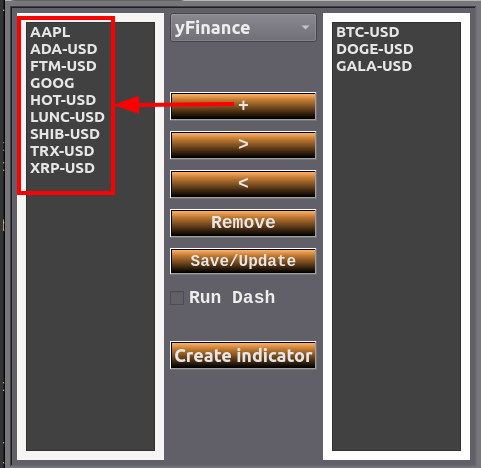

1st Create a list of symbols

The + button creates a new item in the list on the left, double-click the new item to rename it
buttons > and < are used to move values from one list to another.
The remove button deletes the selected value from any list.
** Note: After any change, you need to save!!!2nd Manipulate the list for observation and select the desired period
* 1 – Select the exchange, there are 2 options, yFinance and binance.
** Note: If you choose binance, you need to access the 'ApiKey Binance' menu and enter your private key created in your binance account.
* 2 – Left list, registered values.
* 3 – Right list, values to be observed.
* 4 – Timeframe selector.
* 5 – Month and year selector.
* 6 – Days table, you need to click on a day to validate the date.
* 7 – Time in which the files will be updated for data reading.
* 8 – Save the changes made or update the files of the selected symbols.
3rd Remove symbols that you no longer want to observe
* Use the < button to remove symbols from the right list that you no longer want to observe.
** Use the ctrl key for multiple selection!!!
* Then use the save/update button to confirm the changes.
4th Starting the service and creating a custom indicator
* 9 – Starts the service, it will open the browser with the saved data.
** Note: If you uncheck the checkbox and check it again, if it doesn't turn green, uncheck it and wait a few seconds for the previous service to finish completely.
If the checkbox is checked and is not green, it will not update the data.
* 10 – Screen for creating indicators.
** Note: When creating a new indicator, you need to restart the Run Dash service for the indicator to appear on the chart screen.
* 11 – Opens a log screen.
Presentation of the chart screen
* 1 – Selector of values that were saved in the right list on the initial screen.
** Note: When moving the chart, its positioning will be saved, and when changing the symbol, you need to wait until the new chart appears in its original scale to make adjustments if necessary.
If you don't wait, the chart will be generated in the wrong scale.
* 2 – List of indicators, indicators created by the Create indicator button should appear here.
** There is a file that saves the selected indicators with their respective values.
* 3 – Chart update time, this is different from the time in seconds that updates the files on the initial screen.
** If necessary, you can pause the chart update to maintain a study line.
* 4 – Last price.
* 5 – Input selector, choose which input you want to configure from the list and use the Open button. .
* 6 – Toolbar, in this case, you need to pause the chart update.
* 1 – Select the exchange, there are 2 options, yFinance and binance. ** Note: If you choose binance, you need to access the 'ApiKey Binance' menu and enter your private key created in your binance account. * 2 – Left list, registered values. * 3 – Right list, values to be observed. * 4 – Timeframe selector. * 5 – Month and year selector. * 6 – Days table, you need to click on a day to validate the date. * 7 – Time in which the files will be updated for data reading. * 8 – Save the changes made or update the files of the selected symbols. 3rd Remove symbols that you no longer want to observe
* Use the < button to remove symbols from the right list that you no longer want to observe. ** Use the ctrl key for multiple selection!!! * Then use the save/update button to confirm the changes. 4th Starting the service and creating a custom indicator * 9 – Starts the service, it will open the browser with the saved data. ** Note: If you uncheck the checkbox and check it again, if it doesn't turn green, uncheck it and wait a few seconds for the previous service to finish completely. If the checkbox is checked and is not green, it will not update the data. * 10 – Screen for creating indicators. ** Note: When creating a new indicator, you need to restart the Run Dash service for the indicator to appear on the chart screen. * 11 – Opens a log screen.